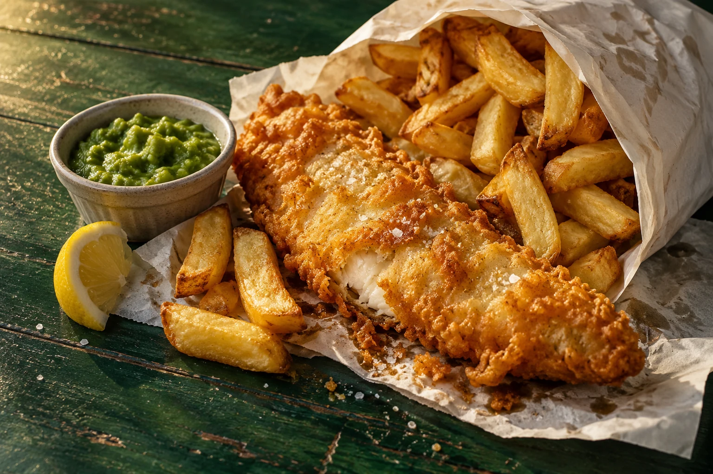

Cod & chips
The classic pairing, with golden battered cod.
YOUR LOCAL CHIPPY IN TONGHAM
Golden batter. Proper chips.
A little something to look forward to.

JUST AROUND THE CORNER
Find The Orient in the heart of Tongham.
Make it your next takeaway stop.
01252 642962 Publicly listed number · owner confirmation needed
| Monday | 5pm – 9pm |
|---|---|
| Tuesday | 12pm – 1:45pm 5pm – 9pm |
| Wednesday | 12pm – 1:45pm 5pm – 9pm |
| Thursday | 12pm – 1:45pm 5pm – 9pm |
| Friday | 12pm – 1:45pm 5pm – 9pm |
| Saturday | 12pm – 1:45pm 5pm – 9pm |
| Sunday | Closed |
Hours are from a public listing and need confirmation.
Please check with the shop before visiting.
A LITTLE SALT. A LITTLE VINEGAR.
A lot to look forward to.
Back to the menu